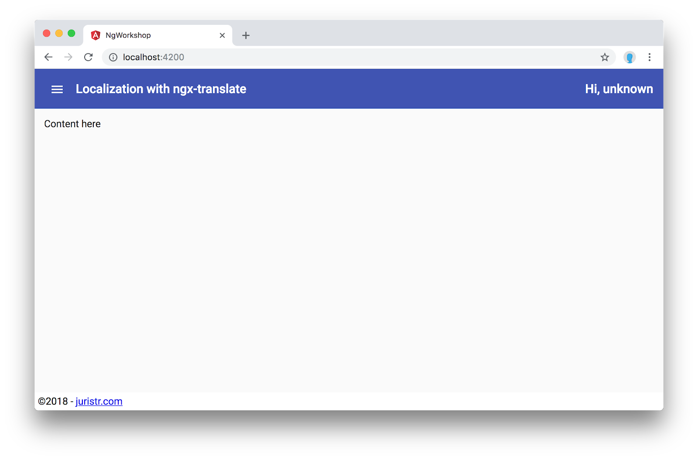
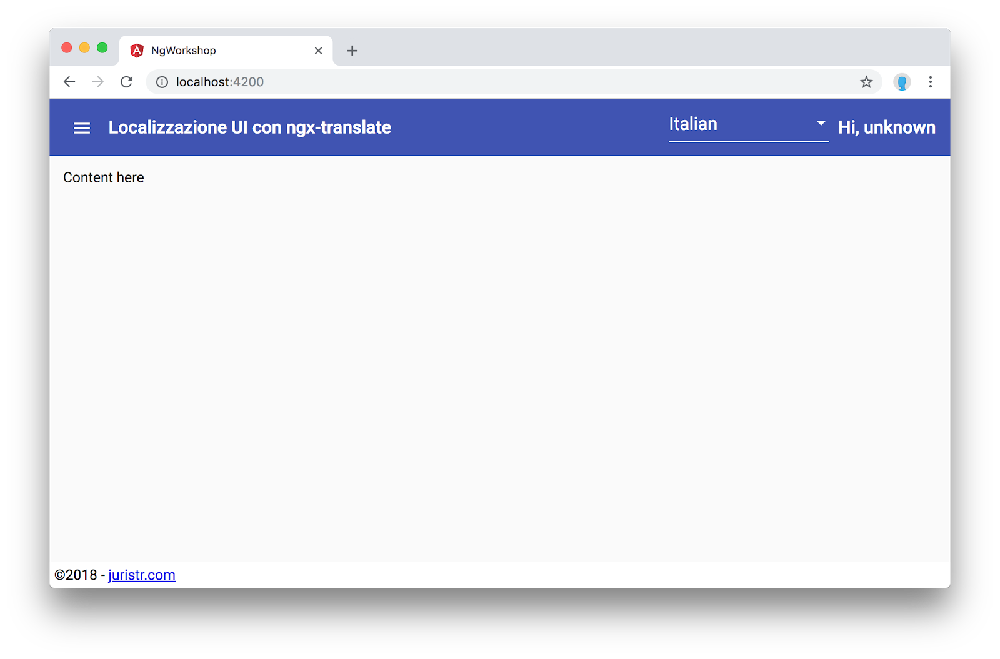
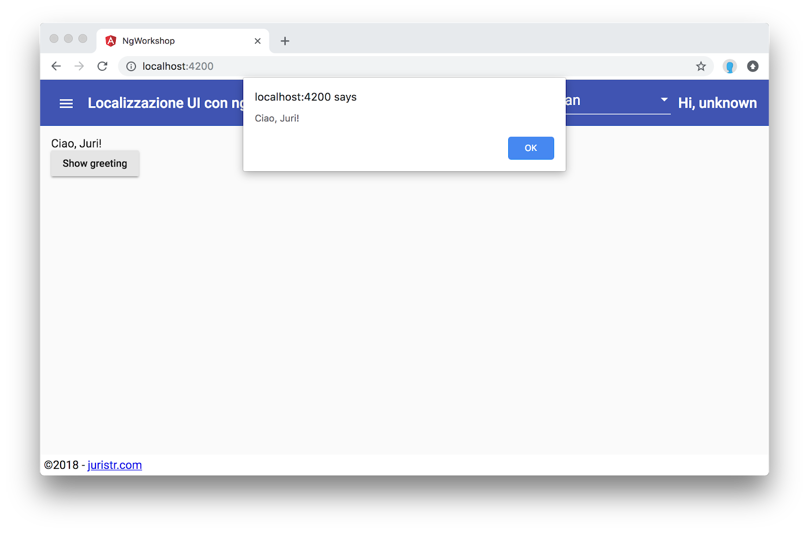
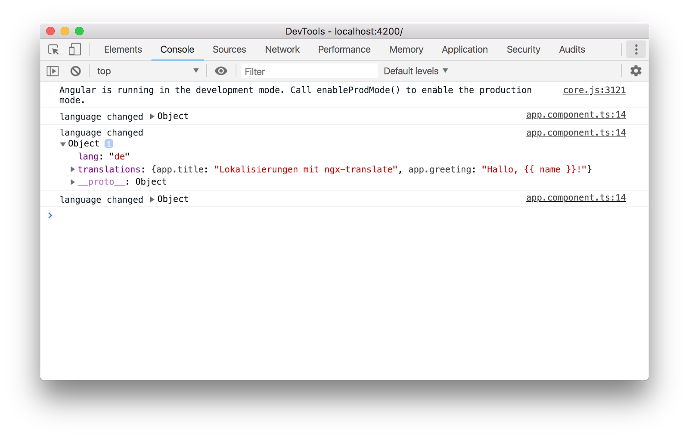

Every serious single-page application needs to interact with some API in order to retrieve the data it wants to visualize to its users. While we could simply use the native browser APIs for executing HTTP requests (such as fetch), Angular comes with its built-in Http client.
What you'll learn
- How to install and setup ngx-translate
- How to localize Angular templates
- How to programmatically localize strings
- How to dynamically switch the application language
What you'll need
- A valid code editor, ideally Visual Studio Code
- Git and a recent version of Node (v9+) and NPM (v5+)
Download the Code
Click the following link to download all the code for this codelab:
Unzip the code and open it with Visual Studio Code (or your respective code editor of choice).
Install npm packages and start the app
After unpacking the files, open up a terminal (you can also do that from within Visual Studio Code) at the location where you unzipped your files.
Execute npm install to download all the necessary packages.
Launching the Angular Development Server?
Open your terminal and type
$ npm startThis is a shortcut for npm run start and is mapped in your package.json to ng serve which will launch the local Angular CLI development server. Open your browser at http://localhost:4200. You should see the following screen:

Install the ngx-translate/core package as well as the ngx-translate/http-loader packages.
$ npm i @ngx-translate/coreAs a next step we need to add the corresponding Angular modules and register them on our AppModule.
...
import { TranslateModule } from '@ngx-translate/core';
@NgModule({
declarations: [AppComponent],
imports: [
...
TranslateModule.forRoot()
],
providers: [],
bootstrap: [AppComponent]
})
export class AppModule {}
Ngx-translate allows to set translations in a static manner using the setTranslation on the TranslateService.
translations.setTranslation('en', {
title: 'Localization with ngx-translate'
});
translations.setTranslation('de', {
title: 'Lokalisierung mit ngx-translate'
});While this works for very simple scenarios, ngx-translate is most commonly set up with a loader that fetches the corresponding localizations via HTTP. Therefore, let's install the @ngx-translate/http-loader library.
$ npm i @ngx-translate/http-loaderConfigure the Http Loader
In your app.module.ts, just above the @NgModule({..}) decorator, create a function that will configure our Http Loader.
...
import {TranslateModule } from '@ngx-translate/core';
import { TranslateHttpLoader } from '@ngx-translate/http-loader';
import { HttpClient } from '@angular/common/http';
export function createTranslateLoader(http: HttpClient) {
return new TranslateHttpLoader(http, './assets/i18n/', '.json');
}
...We configure the TranslateHttpLoader to fetch the localizations in our "assets/i18n" folder.
Also, make sure you also register the HttpClientModule in your AppModule.
Configure the TranslateModule to use our new loader
As a final step, we need to make sure our TranslateModule uses the Http loader we just created, by passing the loader option to the TranslateModule.forRoot(..) function.
@NgModule({
declarations: [AppComponent],
imports: [
...
TranslateModule.forRoot({
loader: {
provide: TranslateLoader,
useFactory: createTranslateLoader,
deps: [HttpClient]
}
})
],
providers: [],
bootstrap: [AppComponent]
})
export class AppModule {}First, let's create a localization file for the English language: "src/assets/i18n/en.json" with the following content:
{
"app.title": "Localization with ngx-translate"
}Restart your Angular CLI devserver and navigate to http://localhost:4200/assets/i18n/en.json. It should properly expose the created file.
Set the current language
Most of the interactions with ngx-translate happens via its TranslateService. We can get a reference to it by simply injecting it via the constructor function.
import { Component } from '@angular/core';
import { TranslateService } from '@ngx-translate/core';
@Component({
...
})
export class AppComponent {
title = 'Localization with ngx-translate';
constructor(private translateService: TranslateService) {
}
}Use the setDefaultLang(..) function to set the default language, by passing in the two-letter ISO code of the corresponding language you want to activate.
export class AppComponent {
title = 'Localization with ngx-translate';
constructor(private translateService: TranslateService) {
translateService.setDefaultLang('en');
}
}Inspecting the network traffic in our browser's devtools, we should now see our "en.json" file being fetched properly.

We can now localize the title of our application. ngx-translate uses an Angular Pipe to transform the "key" into the corresponding value of the currently active language.
Open the app.component.html and replace the {{ title }} with the following:
{{ 'app.title' | translate }}Instead of referencing the "title" variable of our AppComponent (we can now delete that variable), we're directly referencing the localized value from the "en.json" file.
Alternatively, also the translate directive can be used which is equivalent.
<div [translate]="'HELLO'"></div>
// or
<div translate>HELLO</div>To verify our localization properly works, let's add some other languages. Create a corresponding "de.json" and "it.json" and localize the title accordingly.
Once you have created those files, we need to add some buttons that allow us to switch the language. Copy the following piece of code into proper space of the "mat-toolbar" of our app.component.html
<mat-toolbar color="primary" role="header" class="app-navbar">
...
<div fxFlex fxFill></div>
<div fxFlex="100px">
<mat-form-field>
<mat-select (valueChange)="onLanguageChange($event)">
<mat-option value="en">
English
</mat-option>
<mat-option value="it">
Italian
</mat-option>
<mat-option value="de">
German
</mat-option>
</mat-select>
</mat-form-field>
</div>
<div fxFlex="200px" fxLayoutAlign="end" class="avatar-col">
Hi, unknown
</div>
</mat-toolbar>Then in our AppComponent code, add the following function, where we set the current language by using the TranslateService.
@Component({ ... })
export class AppComponent {
...
onLanguageChange(lang) {
this.translateService.use(lang);
}
}Switching the language from the select box should dynamically also translate the app title.

Assume we want to have some string to localize which contains parameters. For instance:
Hi, {{ name }}!Let's add this string to our various translations files first.
// en.json
{
"app.title": "Localization with ngx-translate",
"app.greeting": "Hi, {{ name }}!"
}
// de.json
{
"app.title": "Lokalisierungen mit ngx-translate",
"app.greeting": "Hallo, {{ name }}!"
}
// it.json
{
"app.title": "Localizzazione UI con ngx-translate",
"app.greeting": "Ciao, {{ name }}!"
}Then, in our app.component.html find the part "Content here" inside the .app-page-container. Replace it with the following:
{{ "app.greeting" | translate:{ name: "Juri"} }}As you can see, the translate pipe takes an object as parameter where the properties act like the keys we defined in our localized string: i.e. in our example "name".
While most of the translatable things are inside our component templates and can be handled via the translate pipe, often you have the need to retrieve translations from within our component template.
Just below our "app.greeting" key, insert a new button element.
<mat-drawer-content class="app-page-container">
<div>
{{ "app.greeting" | translate:{ name: "Juri"} }}
</div>
<button mat-raised-button color="secondary" (click)="onShowGreeting()">Show greeting</button>
</mat-drawer-content>In our AppComponent code, we need to implement the onShowGreeting function with the goal of retrieving the localized value of our "app.greeting" from the TranslateService. For that purpose we can use the .get(...) function.
onShowGreeting() {
this.translateService.get('app.greeting', { name: 'Juri' }).subscribe(x => {
alert(x);
});
}Clicking the button you should get an alert in the currently selected language.

Note, the translateService.get(...) function returns an Observable. The reason is that our translations might not have been fetched yet, especially when we retrieve them via an http loader.
If you're certain that all the translations are ready (i.e. because you fetch them at app startup), then you can also use the translateService.instant(..) function, which works exactly like .get(..) but immediately returns the value.
In some situations we might need to know when the language is being changed, in order to update our data as well (i.e. select boxes which might have to be fetched from the API again).
To listen to language changes, the TranslateService expose an onLangChange event to which we can subscribe. Add the following to the constructor of our AppComponent.
this.translateService.onLangChange.subscribe((ev: LangChangeEvent) => {
console.log('language changed', ev);
});Inspect the Browser's devtools console to see the log statements when switching between the languages
